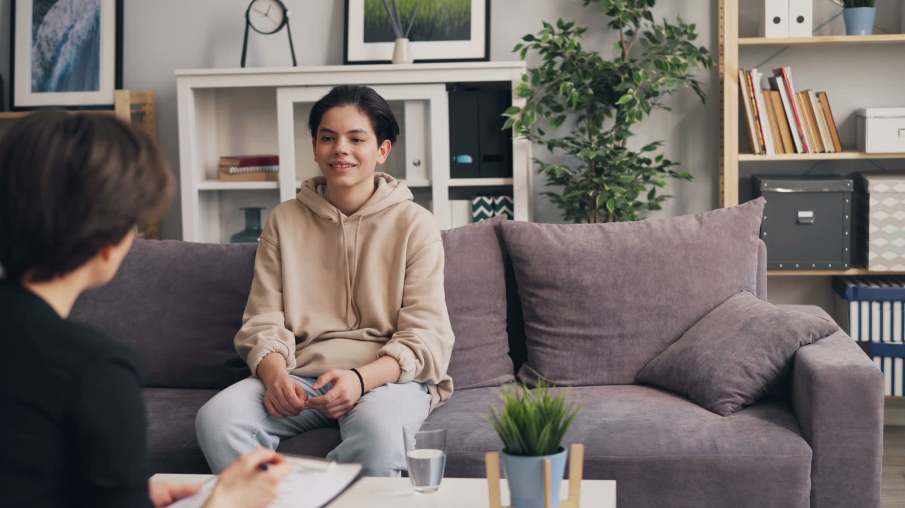

הילד שלכם כבר לא משתף כמו פעם? הבת מסתגרת בחדר, מתרחקת מהחברים או מגיבה בכעס לכל ניסיון להתקרב? לא תמיד קל לדעת אם מדובר בהתנהגות טבעית של גיל ההתבגרות או בסימן למצוקה רגשית. טיפול רגשי לבני נוער נותן למתבגר מרחב בטוח, הקשבה וכלים אמיתיים להתמודדות עם האתגרים שמעסיקים אותו.

גיל ההתבגרות הוא תקופה של שינויים מהירים, והיום יותר מתמיד בני נוער נדרשים להתמודד עם ציפיות חברתיות, השוואות בלתי פוסקות ברשתות החברתיות, עומס רגשי והרצון למצוא את מקומם בעולם. לא תמיד הם יודעים להסביר מה עובר עליהם - לעיתים המצוקה מתבטאת בהסתגרות, בהתפרצויות כעס, בקושי ביצירת קשרים או בשינוי משמעותי בהתנהגות.
טיפול רגשי לבני נוער ומתבגרים יכול להעניק להם מרחב בטוח, הקשבה וכלים להתמודדות עם האתגרים שמעסיקים אותם. בקליניקת נפשלווה של אלון שמש, הליווי מבוסס על כלים מעולם ה-NLP והאימון האישי, תוך התאמה לצרכים של כל נער ונערה ושיתוף ההורים בתהליך.
גיל ההתבגרות תמיד היה תקופה מורכבת, אבל המציאות של היום מוסיפה אתגרים שלא היו קיימים באותה עוצמה בעבר.
לצד השינויים הגופניים והרגשיים, בני הנוער מתמודדים עם לחץ חברתי, צורך מתמיד להשתייך, ציפיות לימודיות, שאלות על זהות אישית ורצון לעצמאות. הרשתות החברתיות יוצרות עולם שבו ההשוואה לאחרים כמעט בלתי פוסקת: תמונות, תגובות, קבוצות וואטסאפ ומספר העוקבים עלולים להשפיע על הדימוי העצמי ועל תחושת השייכות.
גם שימוש ממושך במסכים עשוי להפוך לדרך להימנע מהתמודדות עם קשיים, בדידות או תחושות לא נעימות, ולעיתים לפגוע בשינה, בקשרים החברתיים ובשגרת החיים. בתוך כל אלה, מתבגרים ומתבגרות מנסים לבנות לעצמם זהות עצמאית, אך עדיין זקוקים לתמיכה, לגבולות ולתחושת ביטחון.
הקושי הוא שלא תמיד הם יודעים לבקש עזרה, ולעיתים דווקא כשהם זקוקים לה יותר מכול, הם מתרחקים מהאנשים הקרובים אליהם.
לא כל שינוי במצב הרוח מעיד על בעיה רגשית. הסתגרות זמנית, רצון לפרטיות או ויכוחים עם ההורים יכולים להיות חלק טבעי מההתבגרות. עם זאת, כאשר מופיעים שינויים משמעותיים, מתמשכים או כאלה שפוגעים בתפקוד היומיומי, חשוב לשים לב.
מבלה יותר זמן לבד, נמנע משיחות משפחתיות או מפסיק להשתתף בפעילויות שבעבר נהנה מהן.
עצבנות חריגה, בכי, כעס, תסכול או מעברים מהירים בין רגשות בלי סיבה ברורה.
הימנעות ממפגשים עם חברים, בדידות, קושי בהשתלבות בקבוצה או חשש מדחייה.
אמירות חוזרות כמו "אני לא שווה", "אף אחד לא אוהב אותי" או "אני לא מצליח בכלום".
התפרצויות, התנגדות חריגה, הימנעות ממשימות או דפוסים שלא אפיינו את המתבגר בעבר.
קשיי הירדמות, עייפות מתמשכת או שינוי משמעותי בהרגלי האכילה.
קושי להתנתק מהטלפון או מהמחשב והתרחקות מפעילויות אחרות, עד כדי פגיעה בשגרה.
היעדרויות מבית הספר, ירידה משמעותית במוטיבציה או ויתור על תחומי עניין.
ככל שהסימנים נמשכים, מופיעים יחד או פוגעים בתחומי חיים שונים, כך חשוב יותר לפנות להתייעצות מקצועית. אמירות על חוסר רצון לחיות, פגיעה עצמית או התנהגות מסכנת מחייבות הערכה דחופה של גורם מוסמך בתחום בריאות הנפש, ולא הסתפקות בליווי רגשי.
ליווי רגשי לנוער אינו מתמקד רק בהתנהגות שרואים מבחוץ, אלא גם ברגשות, במחשבות ובצרכים שעשויים לעמוד מאחוריה. בקליניקת נפשלווה, אלון שמש מתמקד בארבעה תחומים מרכזיים.
עבור בני נוער, החברים הם חלק משמעותי מהעולם שלהם, ותחושת השייכות החברתית משפיעה על הביטחון העצמי ועל מצב הרוח. בעיות חברתיות עשויות להתבטא בקושי ביצירת קשרים, בקושי במיומנויות חברתיות, בבדידות או בפחד מדחייה, ולעיתים בחרם, השפלה או נידוי חברתי שפוגעים עמוק בערך העצמי. הליווי מתמקד בחיזוק הביטחון העצמי, בפיתוח מיומנויות תקשורת, בהצבת גבולות ובבניית תחושת מסוגלות במצבים חברתיים. במקרים של פגיעה חברתית מתמשכת חשוב לשלב גם את ההורים ואת המסגרת החינוכית, ולא להטיל את ההתמודדות על המתבגר בלבד.
יש בני נוער שמגיבים בעוצמה למצבים שנראים להורים פשוטים יחסית: הערה קטנה מובילה להתפרצות כעס, ויכוח עם חבר מסתיים בבכי או בהסתגרות, ותסכול רגעי הופך לתחושה שהכול מתפרק. חוסר ויסות רגשי עשוי להתבטא בהצפה רגשית, התפרצויות, אימפולסיביות או קושי להירגע אחרי מצב מלחיץ, ולעיתים המתבגר עצמו חווה אשמה או תסכול בעקבות התגובה. בתהליך עובדים על זיהוי הרגשות והמצבים שמעוררים אותם, על מודעות לתגובות האוטומטיות ועל תרגול דרכים חדשות להתמודד עם כעס, פחד ותסכול - לא כדי למנוע רגשות, אלא כדי ללמוד לבטא אותם בלי להיפגע ובלי לפגוע בסביבה.
לעיתים הורים מזהים שהמתבגר חוזר שוב ושוב לאותה התנהגות, גם כשהיא פוגעת בו: נער שמוותר מראש מחשש לכישלון, מתבגרת שמרצה את החברים כדי לא להישאר לבד, או מי שמגיב בכעס בכל פעם שהוא מרגיש מבוקר. דפוסים כאלה מתפתחים לעיתים בעקבות חוויות, אמונות מגבילות או דרכי התמודדות שהפכו להרגל. באמצעות כלים מעולם ה-NLP עובדים על זיהוי הדפוסים, הבנת המצבים שמפעילים אותם ותרגול תגובות חדשות - עבודה על אמונות מגבילות, מסגור מחדש, דמיון מודרך וחיזוק תחושת המסוגלות. המטרה אינה לשנות את האישיות של המתבגר, אלא לאפשר לו לבחור כיצד להגיב במקום לפעול על אוטומט.
לא כל נער או נערה שמתמודדים עם קושי רגשי זקוקים למענה בגלל בעיה מוגדרת. לעיתים מדובר בתקופה של חוסר ביטחון, בלבול, קשיי הסתגלות, מתחים בבית או תחושה כללית שמשהו לא מסתדר. במצבים כאלה תמיכה רגשית לנוער מספקת מרחב שבו אפשר לדבר בחופשיות, להכיר את הרגשות והמחשבות ולפתח כלים להתמודדות. הליווי מתמקד בחיזוק הדימוי העצמי, בפיתוח מודעות אישית, בזיהוי חוזקות וביצירת תחושת מסוגלות ועצמאות, ומותאם לגיל המתבגר, לאופיו ולמטרות שהוא רוצה להשיג.
בני נוער לא תמיד מתחברים לשיחה ישירה על הרגשות שלהם. חלקם מתקשים להסביר מה עובר עליהם, ואחרים חוששים שישפטו אותם או ינסו לשנות אותם.
לכן הבסיס לתהליך הוא יצירת קשר המבוסס על אמון, הקשבה וכבוד לעולמו של המתבגר. אלון שמש משלב בעבודתו כלים מעולם ה-NLP (תכנות נוירו-לשוני) ומעולם האימון האישי, המתמקדים בקשרים שבין שפה, מחשבות, רגשות והתנהגות. זו גישה חווייתית ורגשית, לא פרוטוקול אחיד לכולם, שמתאימה במיוחד למתבגרים שמתקשים או לא רוצים "לדבר על רגשות". התהליך עשוי לכלול:
כל נער ונערה מגיעים עם עולם רגשי שונה, ולכן התהליך מותאם לצרכים האישיים ולמידת שיתוף הפעולה. NLP ואימון אישי עשויים לשמש כלים לפיתוח מיומנויות ומודעות עצמית, אך אינם תחליף לטיפול נפשי מבוסס ראיות כאשר הוא נדרש; הראיות המחקריות ליעילות NLP בטיפול בהפרעות נפשיות מוגבלות.
כאשר מתבגר מתמודד עם קושי רגשי, גם ההורים חווים לא פעם חוסר אונים. הם רוצים לעזור, אבל לא תמיד יודעים אם נכון לשאול שאלות, לתת מרחב, להציב גבולות או להתעקש על שיחה. למעורבות הורית יש תפקיד מרכזי בתמיכה בבני נוער, משום שהבית הוא אחת הסביבות המשמעותיות ביותר בחייהם.
בתהליך ליווי רגשי מותאם אפשר לשלב את ההורים בהתאם לצורך, לסייע להם להבין את הקשיים של המתבגר ולפתח דרכי תקשורת ותמיכה בבית. במקביל חשוב לשמור על הפרטיות ועל תחושת העצמאות של הנער או הנערה, כדי שירגישו בטוחים לשתף ולהיות שותפים לתהליך. המטרה אינה להטיל אחריות על ההורים או על המתבגר, אלא ליצור סביבה תומכת שתאפשר התמודדות טובה יותר.
לא מעט הורים מזהים שהמתבגר זקוק לעזרה, אך נתקלים בהתנגדות: "אני לא צריך טיפול", "אין לי בעיה" או "תעזבו אותי בשקט". במקרים כאלה כדאי להימנע מהצגת הליווי כעונש או כניסיון לתקן משהו שאינו בסדר בילד. במקום זאת אפשר לפתוח בשיחה רגועה, לשתף בדאגה בלי להאשים ולשאול מה היה יכול לעזור לו להרגיש טוב יותר.
חשוב לתת למתבגר מקום להביע את דעתו, להסביר לו מהי מטרת התהליך ולאפשר לו להיות שותף בהחלטה. לעיתים שיחת ייעוץ ראשונית של ההורים עם איש מקצוע יכולה לסייע להם להבין כיצד נכון לגשת לנושא.
לפעמים אתם רואים שהילד שלכם מתמודד עם קושי, אבל כל ניסיון להתקרב מסתיים בשתיקה, בכעס או בהתרחקות. אתם רוצים לעזור לו להרגיש בטוח יותר, להתמודד עם החברים, לשלוט בתגובות שלו ולחזור להאמין בעצמו - אבל לא תמיד יודעים מאיפה להתחיל. בקליניקת נפשלווה אלון שמש מציע ליווי ותמיכה רגשית לבני נוער ומתבגרים בעזרת כלים מעולם ה-NLP והאימון האישי, בהתמקדות בבעיות חברתיות, בקשיים בוויסות רגשי, בשינוי דפוסי התנהגות ובחיזוק הביטחון והמסוגלות האישית. העבודה נעשית בגובה העיניים, מתוך הקשבה לצרכים של המתבגר ובשילוב ההורים במידה המתאימה.
חשוב להבחין בין ליווי רגשי ואימון אישי לבין טיפול נפשי קליני. במקרים של מצוקה משמעותית או פגיעה בתפקוד יש לפנות להערכה של איש מקצוע מוסמך בתחום בריאות הנפש.
מרגישים שהילד או הילדה שלכם זקוקים למישהו שיקשיב, יבין ויעזור להם להתמודד? אפשר ליצור קשר עם אלון שמש, לשוחח על הקושי ולבחון יחד איזה מענה יכול להתאים לנער או לנערה שלכם. גם אם אינכם גרים ברחובות, שיחת ההיכרות הראשונית היא בדיוק המקום להתחיל בו.
שינויים במצב הרוח, רצון לעצמאות וצורך בפרטיות הם חלק טבעי מגיל ההתבגרות. כאשר מופיעים שינויים מתמשכים בהתנהגות, הסתגרות משמעותית, קשיים חברתיים או פגיעה בתפקוד, כדאי לפנות להתייעצות מקצועית.
כן. אפשר לשלב בתהליך כלים חווייתיים ותרגילים מעשיים שאינם מבוססים רק על שיחה. ההתאמה תלויה באופי המתבגר, בצרכיו ובנכונות שלו להשתתף בתהליך.
ניתן לעבוד על חיזוק הביטחון העצמי, פיתוח מיומנויות תקשורת, הצבת גבולות והתמודדות עם דחייה חברתית. במצבים של חרם או נידוי חשוב לשלב גם את ההורים ואת המסגרת החינוכית.
טיפול רגשי הוא מונח רחב הכולל גם טיפולים קליניים הניתנים בידי אנשי מקצוע מוסמכים. אימון אישי וליווי בשיטת NLP מתמקדים בפיתוח מודעות, הרגלים, מיומנויות וכלים להתמודדות, ואינם מחליפים טיפול נפשי כאשר הוא נדרש.
מעורבות ההורים נקבעת בהתאם לגיל המתבגר, לאופי הקושי ולצורכי התהליך. ניתן לשלב שיחות והכוונה להורים תוך שמירה על פרטיות המתבגר ועל גבולות הסודיות.
משך התהליך משתנה בהתאם לקושי, למטרות ולמידת ההתקדמות. אין מספר מפגשים קבוע, וכל תהליך מותאם לצרכים האישיים של הנער או הנערה.

אלון שמש, מטפל רגשי ומאמן להתפתחות אישית, בעל תעודת מאסטר NLP ובוגר בית הספר תות תקשורת, שלמד לעומק את עולמם של בני הנוער. המפגשים מתקיימים בקליניקה ברחובות או בזום, בהתאם להתאמה ולצורך.
כל תהליך נבנה סביב מה שהמתבגר מביא לחדר, לא סביב תבנית מוכנה. הצעד הראשון הוא שיחת היכרות קצרה, בלי התחייבות.
להכיר אותי יותרבקליניקה ברחובות או בזום. שיחה אישית ובלי התחייבות - נבין יחד מה עובר על המתבגר, ונבנה דרך שמתאימה בדיוק לו ולמשפחה שלכם.
למען הסר ספק: הליווי והטיפול הרגשי אצל אלון שמש אינם מחליפים טיפול פסיכולוגי או פסיכיאטרי. אלון אינו פסיכולוג ואינו פסיכיאטר, ויש מצבים שמצריכים אבחון או טיפול של איש מקצוע מתחום בריאות הנפש - במקרים כאלה תקבלו הפניה לגורם המתאים.